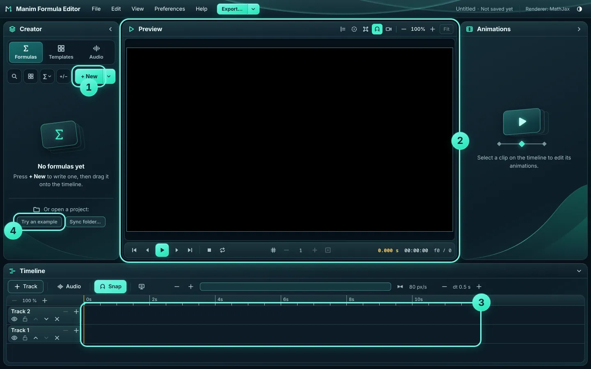
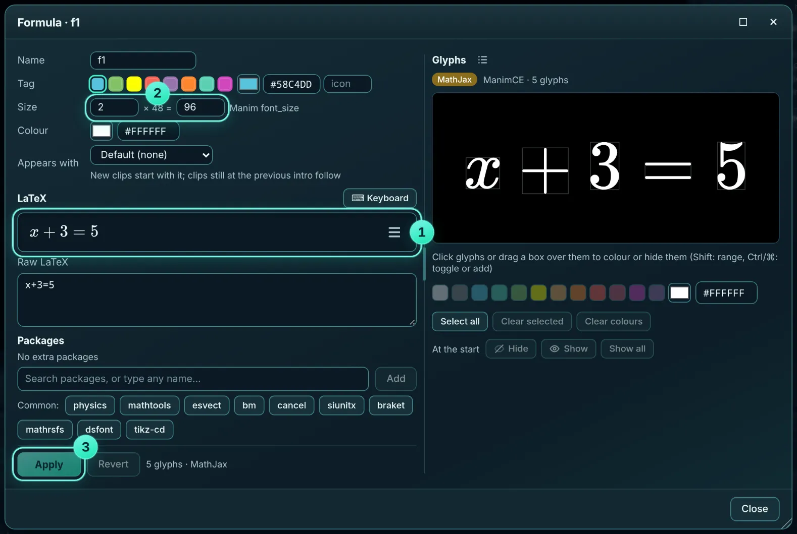
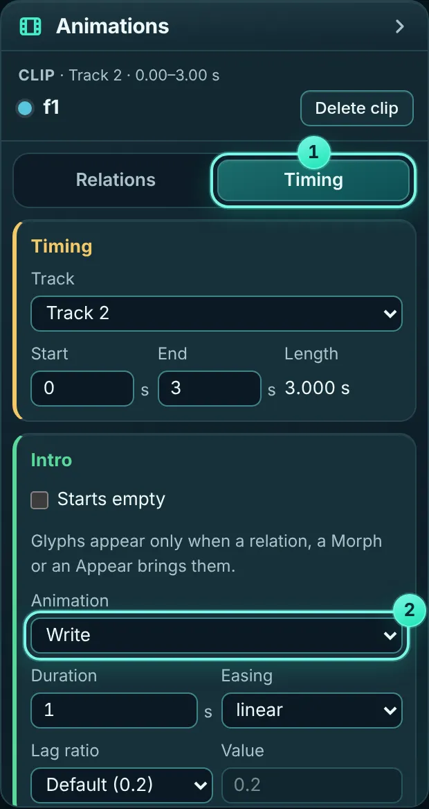
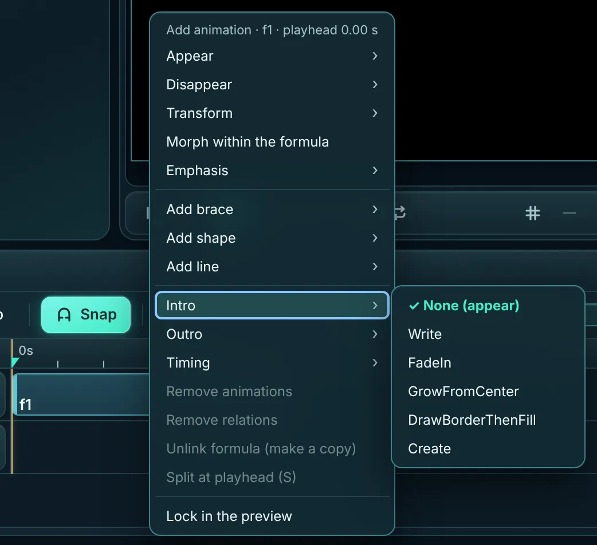
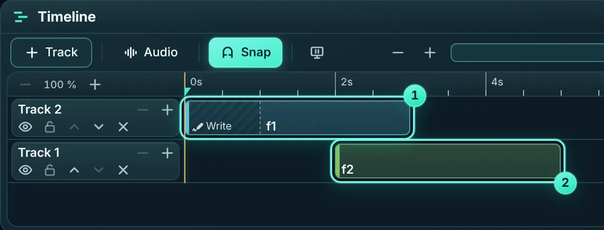
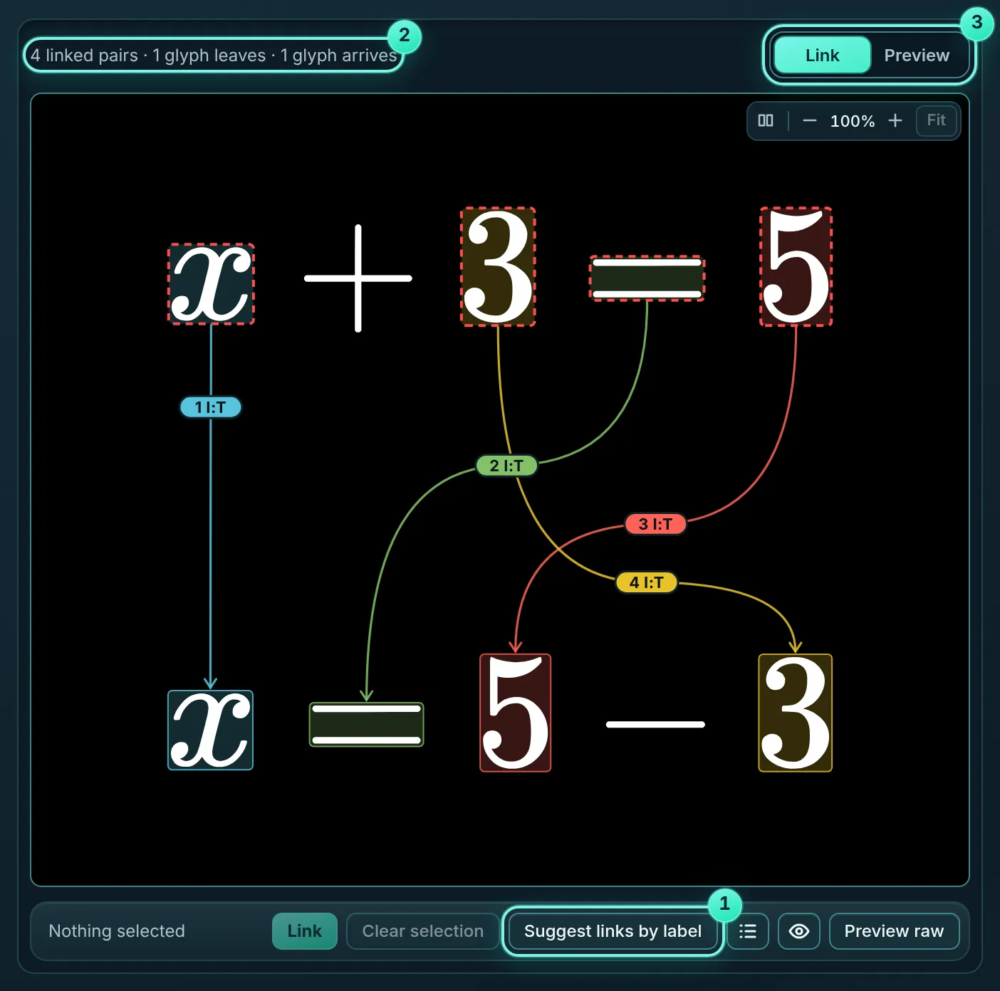
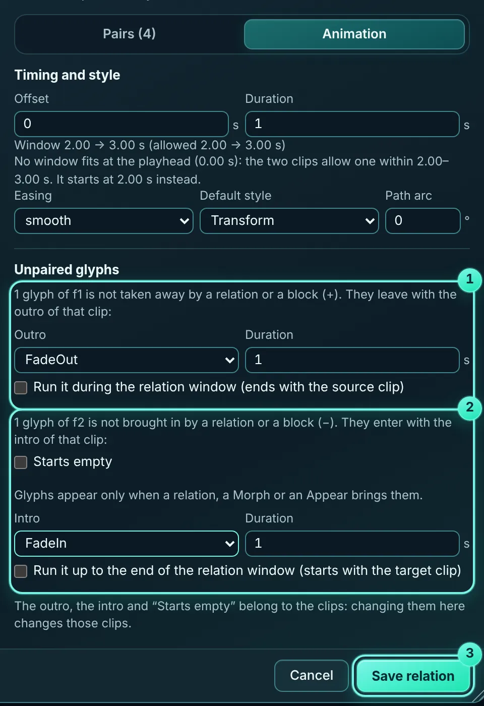
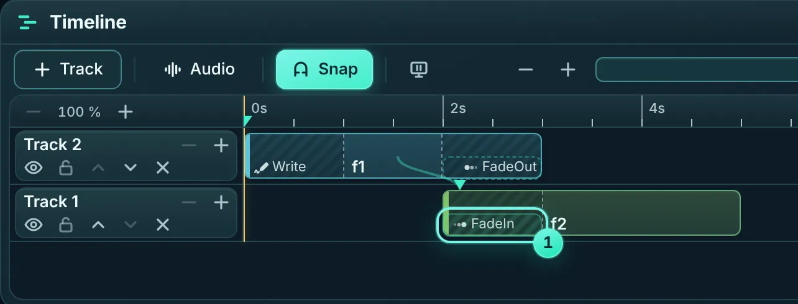
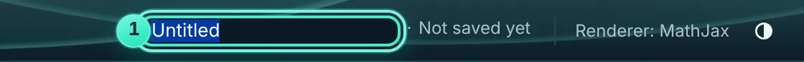
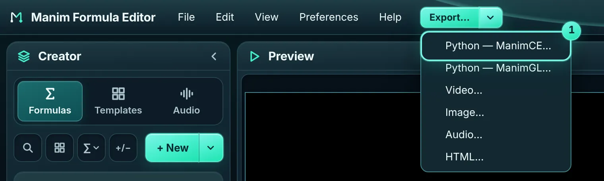

Your first animation
In about fifteen minutes you make a five-second animation: the equation
x + 3 = 5 writes itself onto the screen, then turns into
x = 5 − 3. You write two formulas, put them on the timeline, relate them, play
the result and export it for Manim.
Keep the editor open beside this page and do each step in it. Every step shows what the editor looks like when it is done, and you can download the project as it stands after each one, to check your work or to skip ahead.
Start from an empty project
The editor opens with an empty project. Three places matter for this animation. The Creator (1) will hold your formulas. The Preview (2) shows the scene at the playhead. The Timeline (3) has two empty tracks: a clip on a track says when a formula is on screen.

If another project is open, choose File ▸ New: the editor asks first when there is work to keep.
Write the first formula
You write a formula in LaTeX, in a window of its own, the formula editor.

f1 until you rename it.A glyph is one symbol of the formula as the editor draws it: x,
+, 3, = and 5 are five glyphs. A
transformation moves glyphs, so the word comes back below. The glyph view is also where you
colour single glyphs (Colouring glyphs and objects), and
Writing formulas covers the rest of the editor.
Put it on the timeline
A formula in the Creator is not in the scene yet. The scene is what the timeline holds.
The clip is selected, and the Animations panel on the right shows its settings. Drag the playhead along the ruler: the Preview shows the formula for the three seconds of the clip.
Compare with the project after this step. Open it with File ▸ Open…: press Other file… in the dialog and pick the downloaded file (Projects and files explains the dialog).
Make it write itself in
By default a clip's formula appears at once, at the start of the clip. An intro is the animation a clip starts with instead.

The first second of the clip turns hatched and says Write: that is the intro. Move the playhead to the start and press Space: the formula writes itself in, stroke by stroke. Press Space again to stop.

Compare with the project after this step.
A second formula, a second clip
A transformation needs two formulas.

Why a second track, and why the overlap? A relation links two clips that are on screen together for a moment: the first formula is still there when the second starts. Two clips of the same track cannot overlap, so the second clip goes on another track. The timeline snaps a dropped clip to its ticks, half a second apart: a drop within a quarter of a second of 2 s lands exactly on 2 s.
Play it from the start: the first formula writes itself in, and the second appears at 2 s while the first is still there. They do not connect yet.
Compare with the project after this step.
Make one formula turn into the other
You relate the first clip to the second, and then say which glyph goes where.
A pair is one of these links: a glyph of the first formula that turns into a
glyph of the second. The + has no partner, so it leaves; the − has
none either, so it arrives. Before you save, switch from Link to
Preview over the drawing: the editor plays the transformation in a loop,
with the pairs as they stand.

The last thing to set is how the glyphs without a partner come and go. Open the
Animation tab of the editor. Under Unpaired
glyphs choose FadeOut as the Outro of
f1 (1) and FadeIn as the Intro of
f2 (2). Then press Save relation (3).

Without these two choices the + would stay until its clip ends and then disappear at
once, and the − would appear at once, with nothing to soften either. The editor says that
the outro and the intro belong to the clips: the timeline now shows FadeOut on
f1 and FadeIn on f2.

The window is the stretch where the transformation runs. By default it is one second long. It starts where the playhead is, the yellow line of the timeline, when a window fits there; with the playhead at the start of the timeline, as here, none fits, and the window starts as soon as both clips allow: at the start of the second clip. Compare with the finished project. The page Transforming one formula into another explains relations in more detail.
Play it
Move the playhead to the start with Home and press Space, or press the play button of the Preview. The playhead crosses the timeline and the Preview draws the scene at each moment. Click the ruler to jump to a time. Here are two moments of your animation.
The same scene, played here by the player of these pages. Press its play button, or drag its time bar.
Export it for Manim
The editor can export the scene as a Python file that Manim runs. The scene and its file take the
name of the project, so name it first: click the name in the menu bar (it reads
Untitled), type First animation and press Enter.

Open the arrow of the Export… button, beside the menus, and choose Python — ManimCE… (1). Pressing the button itself opens the same dialog.

The dialog shows the Python it generates. The Scene name is the name of the Python class and of the file. The list under the options says what the scene cannot guarantee: here, that the glyphs are found by position when the scene runs, because the editor typesets with MathJax and Manim with LaTeX. The scene still plays as the Preview does (The generated Python explains why). Press Download FirstAnimation.py, or Copy to put the code on the clipboard. Exporting shows the dialog and its options.
This is the file the editor makes for your project, in the two versions. Export the one for the Manim you have installed; if you have none yet, ManimCE is the usual choice.
To make the video you need Manim, installed as its own documentation says (the Manim Community edition, ManimCE, is the usual choice). Put the file in a folder and run, from that folder, the command that the first lines of the file give:
manim -r 1920,1080 --fps 60 FirstAnimation.py FirstAnimationThat renders the whole animation at 1920×1080 and 60 frames a second, which takes a little while.
For a quick look, run manim -ql -p FirstAnimation.py FirstAnimation instead:
-ql renders at 854×480 and 15 frames a second, and -p plays the video when it
is done. Leave out -r and --fps: they would override -ql and bring the
size and the frame rate back to 1920×1080 at 60. This is what ManimCE makes of your scene at
-ql:
The finished project, with the Python and this video, is here to download:
Exporting covers every export, and The generated Python explains what is in the file.
Where to go next
You wrote two formulas, put them on the timeline, gave the first an intro, related the two clips, played the result and exported it. Every part has a page of its own.
- Writing formulas, Working with the timeline and Appearing and disappearing go deeper into the steps you took.
- How relations work says what a pair can be: one glyph to many, many to one, and the styles of a transformation.
- Solving a linear equation is a whole animation of five formulas and four transformations, built step by step.
- A tour of the interface names every part of the window.